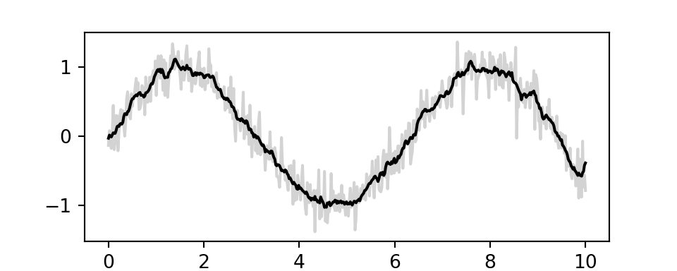
22 Convolutional Neural Networks
“The face is not a simple pattern; it is a hierarchy of parts within parts within parts.”—David Marr, Vision (1982)
The feed-forward networks of Chapter 18 treat every input dimension identically. When the input is an image, this ignores spatial structure: nearby pixels are more related than distant ones, and the same pattern (an edge, a texture) can appear anywhere in the frame. Convolutional neural networks encode these two priors, locality and translation equivariance, directly into the architecture.
The foundational architecture for convolutional neural networks emerged in 1980, when Kunihiko Fukushima introduced the Neocognitron (Fukushima 1980), a hierarchical neural network inspired by Hubel and Wiesel’s discoveries about simple and complex cells in the mammalian visual cortex (Hubel and Wiesel 1962). The Neocognitron was the first architecture to use convolutional layers for feature extraction and pooling layers for translation invariance, successfully recognizing simple patterns through unsupervised learning, regardless of their position in the image. In 1988, Wei Zhang and colleagues applied backpropagation to train a simplified Neocognitron for alphabet recognition (Zhang et al. 1988), demonstrating that supervised learning could be effectively combined with the convolutional architecture. This combination of Fukushima’s architectural insights with gradient-based supervised learning became the foundation for modern CNNs.
We first calculate a filter response by hand, then combine two filters into a classifier. The MNIST example then learns filters from data and compares a CNN with the fully connected networks of Chapter 18.
22.1 Convolutions
A filter (also called a kernel) is a small matrix of weights, typically \(3\times3\) or \(5\times5\), that extracts local features by computing a weighted sum of pixel values within a sliding window. The same weights are used at every position.
A Worked Example
Consider the upper-left and upper-right \(3\times3\) patches of a \(5\times5\) cross formed by its two diagonals. Call these patches \(P\) and \(Q\), and use a filter \(f\) with ones along its main diagonal: \[ P=\begin{pmatrix}1&0&0\\0&1&0\\0&0&1\end{pmatrix},\qquad Q=\begin{pmatrix}0&0&1\\0&1&0\\1&0&0\end{pmatrix},\qquad f=\begin{pmatrix}1&0&0\\0&1&0\\0&0&1\end{pmatrix}. \] Multiply corresponding entries and add. With rows and columns indexed from zero, the responses at positions \((0,0)\) and \((0,2)\) are \[ \begin{aligned} C_{0,0}&=1\cdot1+0\cdot0+0\cdot0+0\cdot0+1\cdot1+0\cdot0+0\cdot0+0\cdot0+1\cdot1=3,\\ C_{0,2}&=0\cdot1+0\cdot0+1\cdot0+0\cdot0+1\cdot1+0\cdot0+1\cdot0+0\cdot0+0\cdot1=1. \end{aligned} \] The matching diagonal gives the larger response; the opposite diagonal still shares the center pixel. Repeating this calculation across the image produces a feature map recording where the filter responds.
Now place a shorter diagonal stroke on a blank image and shift it one pixel right, without clipping any of its pixels: \[ X=\begin{pmatrix}1&0&0&0&0\\0&1&0&0&0\\0&0&1&0&0\\0&0&0&0&0\\0&0&0&0&0\end{pmatrix} \quad\longrightarrow\quad X'=\begin{pmatrix}0&1&0&0&0\\0&0&1&0&0\\0&0&0&1&0\\0&0&0&0&0\\0&0&0&0&0\end{pmatrix}. \] The response of 3 moves from \((0,0)\) to \((0,1)\). This is translation equivariance: for a shared filter with stride one, moving the pattern moves its response, away from boundary effects. Invariance would mean an unchanged output. A maximum over the whole feature map is 3 for either image, but no longer tells us where the stroke was.
The stride is the number of pixels by which the filter shifts at each step. A stride of 1 moves pixel by pixel; a stride of 2 skips positions. The receptive field is the input region influencing one output value, here \(3\times3\). Padding adds zeros around the border: with stride one, “same” padding preserves the input dimensions, while “valid” padding uses no padding and shrinks the output.
For a one-dimensional signal \(x\) and a filter \(w\) of length \(h\), the unflipped operation is \[ C(t)=\sum_{i=0}^{h-1}x(t+i)w(i). \] Strictly, this is cross-correlation: convolution in signal processing flips the filter and sums \(x(t-i)w(i)\). Deep learning libraries omit the flip and still call the operation convolution; learned weights can absorb that reversal. The toy below also uses this unflipped convention. For a symmetric filter such as the moving average below, the two agree up to a shift of the output index.
In Figure 22.1, a uniform filter of length 10, with each weight \(1/10\), smooths a noisy sine wave over \([0,10]\). Smoothing uses fixed averaging weights; learned image filters can instead emphasize changes such as edges.
A Toy Example
To build intuition, consider a simple example with \(5\times5\) images and \(3\times3\) filters. We will classify images into three classes: cross, diagonal, and right-diagonal.
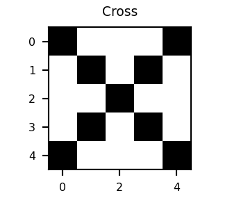
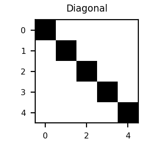
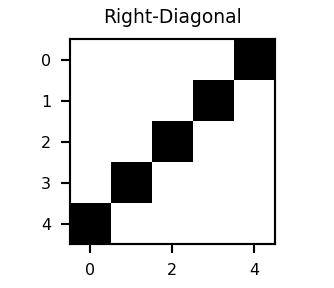
We will use two filters.
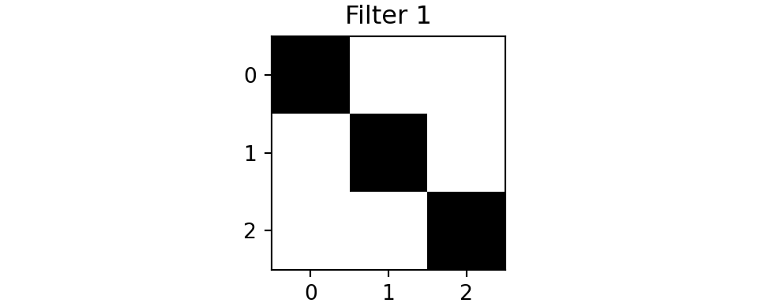
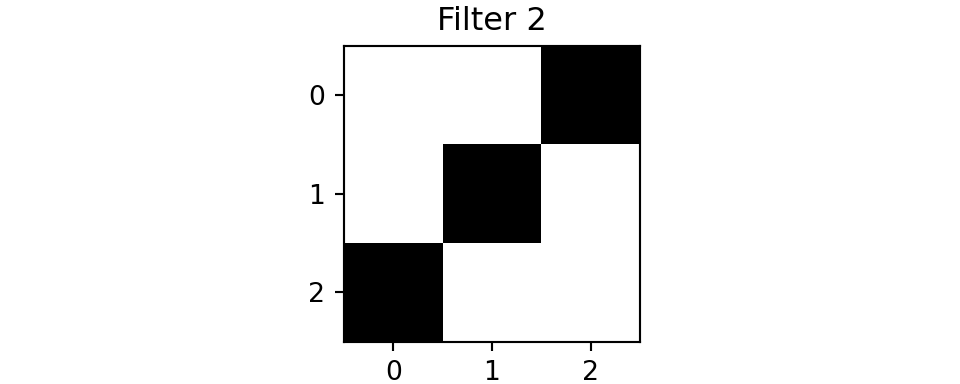
The first filter has 1s along its main diagonal and 0s elsewhere, as in our hand calculation. The second detects the opposite diagonal. The toy network takes a few lines of code: conv slides a \(3\times3\) filter over the image, maxpool performs global max pooling by keeping the strongest response over the entire feature map, and fc followed by softmax turns the two pooled responses into class probabilities. Both the filters and classifier weights w are set by hand, not learned.
def conv(img, f):
out = np.zeros((3,3))
for i in range(3):
for j in range(3):
out[i,j] = np.sum(img[i:i+3,j:j+3]*f)
return out
def maxpool(img):
return np.max(img)
def fc(x, w, b):
return jnp.dot(w,x) + b
def softmax(x):
return jnp.exp(x) / jnp.sum(jnp.exp(x))
def cnn(img, f1, f2):
out1 = conv(img,f1)
out2 = conv(img,f2)
x = np.array([maxpool(out1), maxpool(out2)])
w = np.array([[1,0],[0,1],[0.6,0.6]])
b = 0
z = fc(x,w,b)
return softmax(z),out1,out2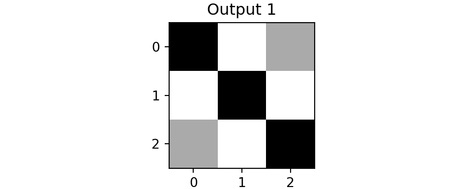
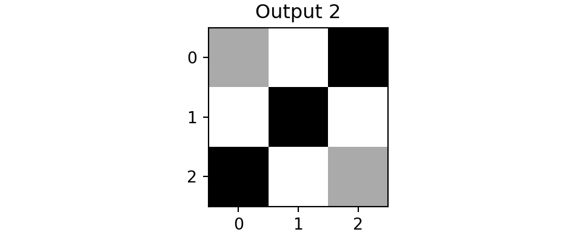
Both feature maps for the cross have a maximum of 3. Applying the same two filters to the diagonal image gives different responses.
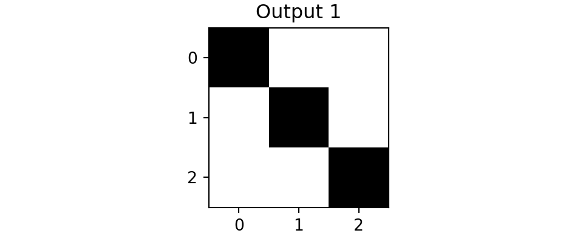
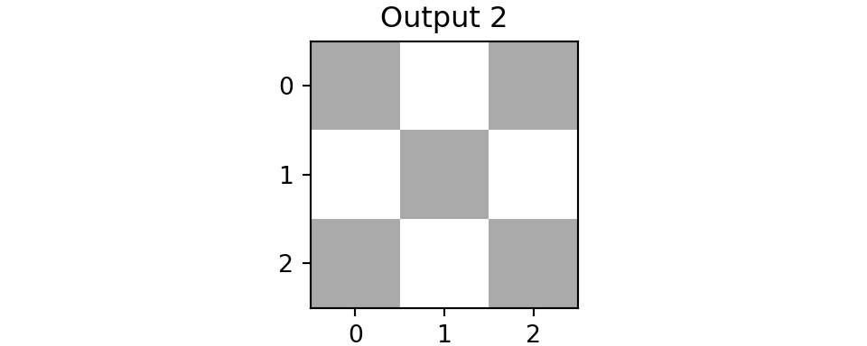
The opposite-diagonal filter produces the weaker map \(\left(\begin{smallmatrix}1&0&1\\0&1&0\\1&0&1\end{smallmatrix}\right)\), rather than a zero response. Global max pooling reduces each map to one number:
| Image | Filter 1 maximum | Filter 2 maximum |
|---|---|---|
| Diagonal | 3 | 1 |
| Right-diagonal | 1 | 3 |
| Cross | 3 | 3 |
For the diagonal image, the classifier multiplies \((3,1)\) by its three weight rows to obtain logits \((3,1,2.4)\). The cross row \([0.6,0.6]\) rewards both diagonals together: for \((3,3)\) it gives 3.6, exceeding either individual response of 3. Softmax converts these logits to probabilities.
The three class probabilities, ordered diagonal, right-diagonal, cross, are (0.26, 0.26, 0.48) for the cross image, (0.59, 0.08, 0.33) for the diagonal image and (0.08, 0.59, 0.33) for the right-diagonal image. The model correctly predicted all three classes. Global pooling discards position, as in the shifted-stroke example, but also loses spatial relationships that may matter for classification.
We now learn both filters and classifier weights from labeled images.
22.2 The MNIST Dataset
The MNIST dataset (LeCun et al. 1998) contains grayscale images of handwritten digits, each \(28\times28\) pixels, labeled 0 through 9. The original dataset includes 60,000 training images and 10,000 test images. For simplicity, both examples below use only the official test data, shuffled into 8,000 training images and 2,000 held-out evaluation images. We call the latter the held-out set throughout; this is not the standard MNIST training/test protocol.
Image data are represented as a matrix of pixel values. A grayscale image has shape (28, 28), with intensities from 0 (black) to 255 (white). Color images add red, green, and blue channels, giving shape (28, 28, 3) in the channels-last convention (PyTorch, below, puts the channel axis first). Figure 22.2 shows sample digits.
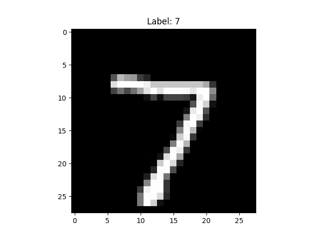
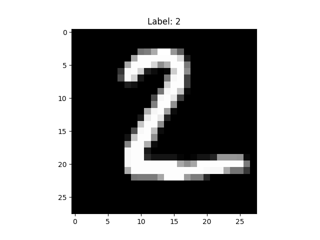
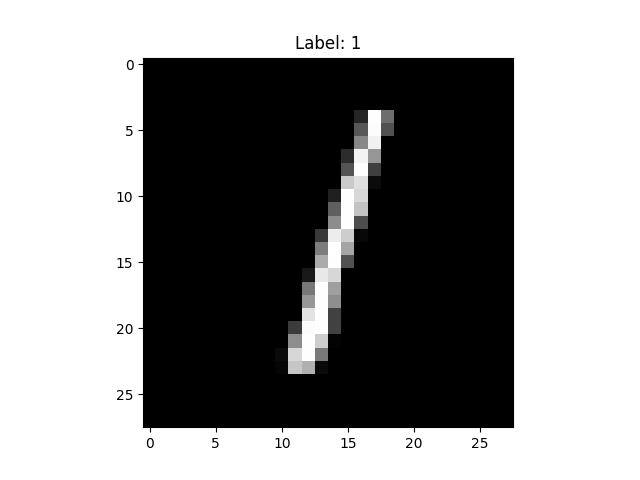
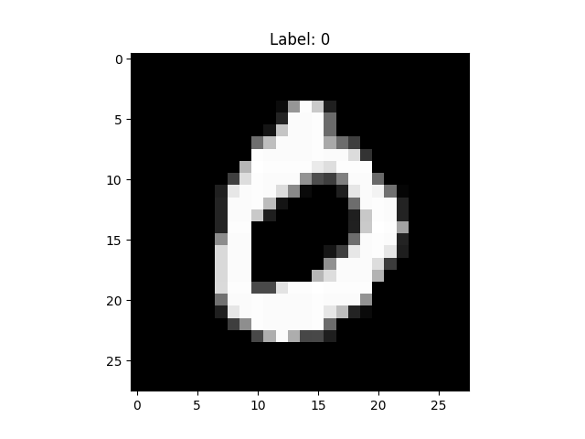
22.3 Fully Connected Approach
A natural starting point is a fully connected neural network, which reshapes each image into a vector of 784 values with no built-in notion of neighboring positions. Its units combine pixels, but separate weights must learn the same pattern at different locations. The output contains log-probabilities for the 10 classes.
The JAX implementation follows Chapter 18 and the gradient updates of Chapter 20. Pixel values are scaled to \([0,1]\), and labels are stored as one-hot vectors.
The network has two hidden layers with \(\tanh\) activation, and its final layer returns log-probabilities, computed as \(z_i-\log\sum_j e^{z_j}\). The cross-entropy loss selects the predicted log-probability of the true digit, and training is plain SGD. The full code is in code/22-cnn.py.
initialize the weights w
repeat for 10 epochs
for each mini-batch (x, y) of 128 images
loss = -mean(sum(y * log_softmax(f(x; w))))
w = w - 0.001 * grad(loss, w)The architecture is shown in Figure 22.3. The run achieves 80% training accuracy and 77% held-out accuracy.
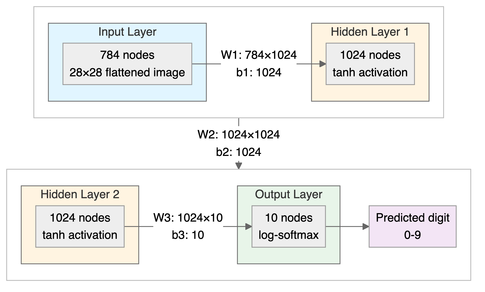
Figure 22.4 shows the training and held-out accuracy during training.
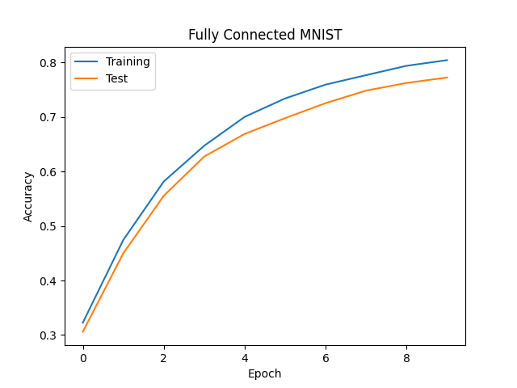
A fully connected layer connecting a \(28\times28\) image to 1024 hidden units requires over 800,000 parameters. A shared \(3\times3\) filter uses nine weights at every position, avoiding separate copies of a detector for different locations.
22.4 CNN for MNIST
We use PyTorch’s nn.Conv2d to implement learned filters. Each first-layer filter produces one feature map. A second-layer filter spans all 32 input maps, sums their local weighted responses, and adds a bias to produce one new map. Thus each second-layer output channel has \(32\times3\times3+1=289\) parameters, and its 64 channels have 18,496 parameters. Two stride-one \(3\times3\) layers have a \(5\times5\) receptive field before pooling: the second layer combines features from neighboring first-layer windows.
The shapes in Figure 22.5 follow \(1\times28\times28\), \(32\times26\times26\), \(64\times24\times24\), then \(64\times12\times12\) after local \(2\times2\) max pooling (stride 2). Unlike the toy’s global maximum, local pooling retains a grid of responses. It can reduce sensitivity to some shifts, but does not guarantee invariance; the flattened dense head also uses position.
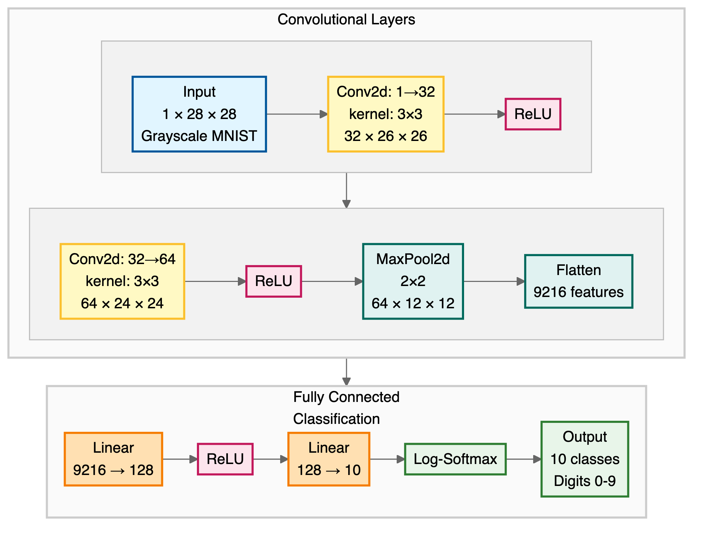
import torch
import torch.nn as nn
from torch.nn import functional as F
class Net(nn.Module):
def __init__(self):
super(Net, self).__init__()
self.conv1 = nn.Conv2d(1, 32, 3, 1)
self.conv2 = nn.Conv2d(32, 64, 3, 1)
# 64 channels × 12 × 12 = 9216 after pooling
self.fc1 = nn.Linear(9216, 128)
self.fc2 = nn.Linear(128, 10)
def forward(self, x):
x = self.conv1(x)
x = F.relu(x)
x = self.conv2(x)
x = F.relu(x)
x = F.max_pool2d(x, 2)
x = torch.flatten(x, 1)
x = self.fc1(x)
x = F.relu(x)
x = self.fc2(x)
output = F.log_softmax(x, dim=1)
return outputTraining draws the same 8,000 images as the dense network, as tensors of shape (batch, 1, 28, 28). The second axis is the grayscale channel expected by nn.Conv2d.
This run uses Adadelta (Matthew D. Zeiler 2012) with learning rate 0.1, rather than the dense network’s SGD. We evaluate on the same 2,000 held-out images.
The two implementations give the following results. Both use 10 epochs and mini-batches of 128; parameter counts include biases.
| Model | Training setup | Held-out accuracy | Parameters |
|---|---|---|---|
| Fully connected | JAX, \(\tanh\), SGD, step size 0.001 | 77% | 1,863,690 |
| CNN | PyTorch, ReLU, Adadelta, learning rate 0.1 | 94% | 1,199,882 |
The accuracy gap does not isolate convolution: architecture, activation, optimizer, and framework all change. These are two illustrative implementations, not evidence that convolution alone raises accuracy from 77% to 94%. A controlled comparison would use matched training recipes and evaluate both models on the same held-out digits and their translated versions.
Weight sharing has a directly countable effect. The two convolutional layers together have 18,816 parameters, while the CNN’s first dense layer, Linear(9216, 128), has 1,179,776. Most parameters in this CNN are therefore in its dense head; shared filters do not by themselves ensure a small total model.
22.5 Summary
Moving the stroke moved its filter response: convolution is translation equivariant away from boundaries. Taking a global maximum erased its position, whereas local pooling retained some spatial information and offered no guarantee of an unchanged prediction. Stacked filters combine channels and enlarge the receptive field, so deeper layers respond to larger regions of the image. In deep networks trained on large image collections, early layers tend to learn edge- and texture-like filters (Matthew D. Zeiler and Fergus 2014), but the two convolutional layers here are too small to show a hierarchy of shapes or objects. These are the architectural ideas the MNIST network illustrates at small scale. Attention, developed in Chapter 23, offers another way to combine information across positions.
Exercises
Pen-and-Pencil
Exercise 22.1 (Convolution Operation) For a 5×5 input image and a 3×3 kernel, compute the convolution, without flipping the kernel, as deep learning libraries do.
Input:
1 2 3 4 5
6 7 8 9 10
11 12 13 14 15
16 17 18 19 20
21 22 23 24 25Kernel:
1 0 -1
1 0 -1
1 0 -1- What is the output size with no padding and stride 1?
- Calculate the top-left output value.
- What type of feature does this kernel detect?
- How would you modify the convolution to preserve the input size?
Exercise 22.2 (Pooling Layers) For a 4×4 feature map:
1 3 2 4
5 6 7 8
9 1 3 2
4 5 6 7- Apply 2×2 max pooling with stride 2. What is the output?
- Apply 2×2 average pooling with stride 2. What is the output?
- Why is pooling useful in CNNs?
Exercise 22.3 (CNN Architecture) Design a CNN for classifying 32×32 color images into 10 classes.
- If the first conv layer has 32 filters of size 3×3, how many parameters does it have?
- After a 3×3 conv (no padding) followed by 2×2 max pool (stride 2), what is the output size?
- Write the architecture for a simple CNN with 2 conv layers and 1 FC layer.
- Calculate the total number of parameters in your architecture.
Exercise 22.4 (True/False: CNNs)
The receptive field of a 5×5 convolution can be matched by two 3×3 convolutions with fewer parameters.
Max pooling is differentiable everywhere.
In a CNN, the number of parameters in a conv layer depends on the input image size.
Exercise 22.5 (Receptive Field Growth: Stacked 3×3 vs. One Large Kernel) Recall from Chapter 22 that the receptive field is the region of the input that influences a single output value. Consider a stack of \(L\) convolutional layers, each with a \(3\times 3\) kernel, stride 1, and enough padding to keep the spatial size fixed. (Padding controls the output size, not the receptive field.)
Argue that each additional \(3\times 3\) layer widens the receptive field of a fixed output unit by one pixel on every side, and use this to derive a general formula for the receptive field \(\text{RF}(L)\) after \(L\) stacked layers. Check your formula for \(L = 1, 2, 3\).
Show that \(L=2\) stacked \(3\times 3\) layers has the same receptive field as a single \(5\times 5\) layer. Assuming \(C\) input and output channels throughout, compare the parameter counts \(2\times(3\times 3\times C^2)\) and \(5\times 5\times C^2\) (ignoring biases). Which is smaller, and by roughly what percentage?
Generalize part (b): show that \(L=3\) stacked \(3\times 3\) layers matches the receptive field of a single \(7\times 7\) layer, and compare the parameter counts \(3\times(3\times 3\times C^2)\) and \(7\times 7\times C^2\).
Beyond the parameter count, the stacked design inserts an extra nonlinearity (e.g., ReLU) after every layer instead of just one. Why does this matter, and why do modern CNN architectures generally favor stacks of small kernels over single large ones?
Computing
Exercise 22.6 (2D Convolution from Scratch) Implement 2D convolution (valid, no padding, stride 1) using only numpy, then use it to find a vertical edge in a small synthetic image. Here image is the \(6\times 6\) array whose first three columns are 0 and last three columns are 1, and sobel_x is the \(3\times 3\) Sobel kernel with rows \((-1, 0, 1)\), \((-2, 0, 2)\) and \((-1, 0, 1)\).
Write a function
conv2d(image, kernel)that slides the kernel over the image with stride 1 and no padding, at each position summing the elementwise product of kernel and patch (as theconv()helper does in Chapter 22). For an \(H \times W\) image and a \(k \times k\) kernel with stride \(s\), give the general formula for the output height and width, and check that it matches the shape returned by your function onimageandsobel_x.Apply
conv2dtoimageusingsobel_x. Where is the response largest, and why is this the behavior you would expect from a vertical edge detector? Verify your output againstscipy.signal.correlate2d(image, sobel_x, mode="valid"). Then compare withscipy.signal.convolve2d(image, sobel_x, mode="valid"), which rotates the kernel 180 degrees before sliding it, the textbook definition of convolution. Do the two scipy results agree here, and what does that say aboutsobel_x?The kernel above has 9 weights, and a convolutional layer adds 1 bias, reused at all 16 output positions. How many parameters would a fully connected layer need to map all 36 input pixels to the same 16 outputs? What does this comparison illustrate about parameter sharing in convolutional layers?
Exercise 22.7 (Max and Average Pooling from Scratch) Chapter 22 says that local max pooling can reduce sensitivity to some shifts but does not guarantee an unchanged prediction. This exercise implements \(2\times 2\) pooling with a chosen stride in numpy and checks exactly how much invariance that is. The input x is the \(2\times 6\) array whose two rows are both \((0, 1, 9, 0, 2, 0)\).
Write a function
pool2d(x, reducer, size=2, stride=2)that slides a size-by-size window overxwith the given stride (no padding) and fills each output entry withreducerapplied to that window. Use it to definemax_pool2dandavg_pool2d(withreducerequal tonp.maxandnp.mean), apply both tox, and check the results againstexpected_max = [[1, 9, 2]]andexpected_avg = [[0.5, 4.5, 1.0]]withnp.allclose.Build
x_shiftby shiftingxone pixel to the right (fill the new first column with zeros, and drop the last column). Poolx_shiftwith both functions and compare, entry by entry, to the part (a) results.The two large activations in
x, the values 9 and 2, sit at columns 2 and 4. Using the part (b) comparison, explain why max pooling reproduces both of them exactly after the shift while average pooling does not, and relate this to why max pooling, rather than average pooling, is usually credited with giving CNNs a degree of translation invariance.
Exercise 22.8 (Training and Shrinking a CNN on MNIST in PyTorch) Chapter 22 trains a PyTorch convolutional network on 8,000 MNIST images and reports 94% held-out accuracy, against 77% for the fully connected network. This exercise runs that pipeline for 5 epochs rather than 10, then shrinks the convolutional channels and measures what the shrinking costs. Use the same data and split as the chapter: load the MNIST test files with the chapter’s parse_images and parse_labels, then reuse numpy.random.RandomState(0) to build traini (the first 8,000 shuffled indices) and testi (the remaining 2,000). The chapter’s training code calls torch.manual_seed(0) before building the model; do the same before building each model here, so that your numbers are reproducible.
Implement the chapter’s
Net:conv1mapping 1 to 32 channels andconv2mapping 32 to 64 channels (both 3×3 valid convolutions, each followed by ReLU), then a single 2×2 max pool, a flatten to 9216 features,fc1mapping 9216 to 128 (with ReLU), andfc2mapping 128 to 10 with a log-softmax output. Train for 5 epochs at batch size 128, minimizingF.nll_losswithtorch.optim.Adadeltaatlr=0.1. Print the training loss at the end of each epoch and report the final held-out accuracy ontesti.Build a smaller network identical to
Netexcept thatconv1outputs 16 channels andconv2outputs 32, so the flattened size becomes 32×12×12 = 4608 andfc1maps 4608 to 128. Train it with the same data split, batch size, epoch count, and optimizer settings. Report its loss trajectory and final held-out accuracy.For both networks, compute the total parameter count with
sum(p.numel() for p in model.parameters())and the count forfc1alone. What fraction of each network’s parameters sits infc1? By roughly what factor did halving the channel counts reduce the total?Compare the two networks’ accuracies and parameter counts, to each other and to the chapter’s 77% fully connected baseline. Does halving the channels cost much accuracy? Using your answer to (c), explain why shrinking the convolutional channels cuts the total parameter count by roughly the same factor even though the convolutional layers themselves hold under 2% of the parameters.